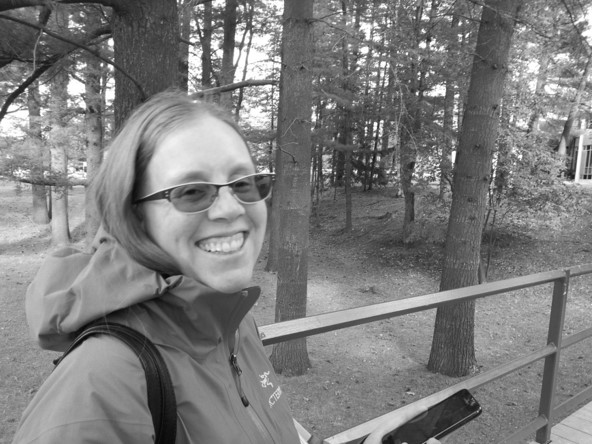

Le Projet TreeTraque
TreeTraque est un projet de recherche mené par Dr. Elisabeth Levac. Plusieurs étudiants ont été impliqués dans le projet, notamment : Andrew Compton, Anabel Laurie et Jessica Meadows. Leur contribution est reconnue.
Directrice du Projet

Dr. Elisabeth Levac
Professeure, Département d'Environnement et de Géographie
Université Bishop's
Professeur Levac enseigne au département d'Environnement et de Géographie à l'université Bishop's. Elle fait le suivi des aérosols biogéniques (pollen et spores) à Sherbrooke depuis 2006. TreeTraque va permettre d'établir un lien entre la floraison des arbres et les observations du pollen au microscope.
Elle conduit des recherches sur l'impact du pollen aérien et de la pollution de l'air sur la santé. Des travaux en cours examinent la durée de la saison des allergies dues à l'herbe à poux pour déterminer si elle est affectée par les changements climatiques.
Liens de référence
Site web de recherche
elisabethlevac.ca
elisabethlevac.ca
Elisabeth Levac sur le site de Bishop's
https://www.ubishops.ca/bu-directory/name/elisabeth-levac/
https://www.ubishops.ca/bu-directory/name/elisabeth-levac/
Surveillance du pollen
Pollen Lennoxville
Pollen Lennoxville
Autres projets
Tree Canopy Sherbrooke
Tree Canopy Sherbrooke